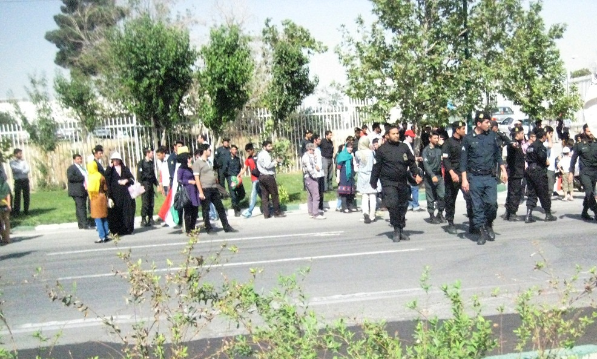

|
|

به خشونت کشیده شدن تجمع مسالمت آمیز زنان در اعتراض به ممنوعیت ورود به استادیوم
پنج شنبه30 خرداد 1392
تاقانون خانواده برابر: امروز 29 خرداد ماه جمعیتی متشکل از زنان و مردان در اعتراض به ممنوعیت حضور زنان در ورزشگاه و جشن پیروزی صعود تیم ملی فوتبال ایران به جام جهانی راس ساعت چهار نزدیک ورودی درب غربی ورزشگاه تجمع کردند .
تجمع این افراد با گردهمایی حدود 60 زن و مرد آغاز شد و هر لحظه به جمعیت معترضین اضافه می شد. ماموران نیروی انتظامی از ورود اتومبیل های با سرنشین زن به پارکینگ ورزشگاه ممانعت میکردند و برای تحریک جمعیت تجمع یافته از الفاظ و ادبیات توهین آمیز استفاده می کردند تا جایی که این رفتارها و عدم اجازه حضور زنان به ورزشگاه موجب اعتراض زنان و مردان تجمع کننده گردید که با سرکوب ماموران مستقرمواجه شدند. مامورین با خشونت جمعیت را متفرق کردند و پرچم های ایران را از دست زنان معترض می گرفتند . ماموران همچنین اقدام به ضرب و شتم دو نفر از مردانی که همراه جمعیت زنان بودند کردند.

به گفته شاهدان فضای ورودی درب ورزشگاه به شدت متشنج بود و چند نفر از معترضین نیز بازداشت شدند .
یک روز پس از پیروزی تیم ملی فوتبال ایران و راه یافتن آن به جام جهانی فوتبال دعوت به جشن پیروزی و مراسم استقبال از بازیکنان تیم ملی در ورزشگاه آزادی صورت گرفت . در این دعوت حضور زنان به مانند قبل در ورزشگاه ممنوع اعلام شد .
زنان در شبکه های اجتماعی به این امر اعتراض کردند و قرار شد برای اعتراض به آن ساعت 4 در درب ورودی ورزشگاه تجمع کنند تا اجازه حضور پیدا کنند .